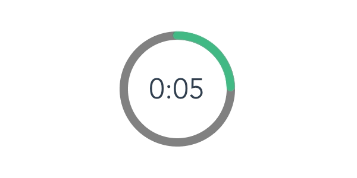

<!DOCTYPE html>
<html>
  <head>
    
    <script src="jspsych/jspsych.js"></script>
    <script src="jspsych/plugins/jspsych-html-button-response.js"></script>
    <script src="jspsych/plugins/jspsych-html-keyboard-response.js"></script>
    <script src="jspsych/plugins/jspsych-instructions_modified.js"></script> 
    <script src="jspsych/plugins/jspsych-fullscreen.js"></script>
    
    
    
    <link rel="stylesheet" href="jspsych/css/jspsych.css"></link>
    <link rel="stylesheet" href="timer_css.css"></link>

    </head>
  
  <body>
    
  
  <script>

var timeline = [];

// Here i'm trying to make an if statemente with the condition of rotation of the device in order to start the experiment.

//   window.addEventListener("orientationchange", function(event) {
//     if (event.target.screen.orientation.angle){
        
//       var data = 1
//     }

//   });
  
// var pre_if_trial = {
//       type: "html-button-response",
//       stimulus: '<p>Por favor habilite la opcion de rotacion de pantalla y gire su telefono.</p><br>',
//       choices: ['Continuar']
  
// }

// var if_trial = {
//     type: 'html-button-response',
//     stimulus: 'You chose to view the trial. Press any key to continue.',
//     choices: ['pindonga']
  
// }

// var if_node = {
//     timeline: [if_trial],
//     conditional_function: function(){
//         // get the data from the previous trial,
//         // and check which key was pressed
//         var data = data
//         if(data == 1){
//             return false;
//         } else {
//             return true;
//         }
//     }
// }

// var after_if_trial = {
//     type: 'html-keyboard-response',
//     stimulus: 'This is the trial after the conditional.'
// }

  
  /* define rotate trial */
    var rotate = {
      type: "html-button-response",
      stimulus: '<p>Por favor habilite la opcion de rotacion de pantalla y gire su telefono.</p><br>',
      // prompt: '',
      choices: ['Continuar'],
    };
    // timeline.push(rotate);

    //Full screen
    var fullScreen = {
        type: 'fullscreen',
        fullscreen_mode: true,
        message: '<p>El experimento ira a pantalla completa cuando usted presione el boton que se encuentra debajo</p><br>',
        button_label: 'Continuar a pantalla completa'    
    } 
  
    /* define instructions trial */
    var explanation = {
    type: 'instructions',
    pages: [
            ` 
            <p style='font-size:150%;color:black'>  Página 1.<br>` ,

              `<p style='font-size:150%;color:black'>  Página 2.<br>`,

              `<p style='font-size:150%;color:black'>  Página 3.<br>`
            ],
    show_clickable_nav: true,
    show_page_number: true,
    button_label_previous: 'Anterior',
    button_label_next: 'Siguiente',
    page_label: 'Página'
  }

  
    /* test trials */
    
    // var test_stimuli = [
    //   { stimulus: 'blue.png', data: { test_part: 'test', correct_response: '48' } },
    //   { stimulus: 'orange.png', data: { test_part: 'test', correct_response: '49' } }
    // ];

    // 48 = 0 = primer boton , 49 = 1 = segundo boton

    var test_stimuli = [
      { stimulus: '<div style="font-size:160px;">SR</div>', data: { test_part: 'test', correct_response: '48' } },
      
      { stimulus: '<div style="font-size:160px;">RS</div>', data: { test_part: 'test', correct_response: '49' } }
    ];


    var fixation = {
      type: 'html-keyboard-response',
      stimulus: '<div style="font-size:60px;">+</div>',
      // stimulus: '<div style="font-size:60px;">+</div>',
      choices: jsPsych.NO_KEYS,
      trial_duration: 500,
      data: {test_part: 'fixation'}
    }
    
    var presentation = {
      type: 'html-keyboard-response',
      stimulus: jsPsych.timelineVariable('stimulus'),
      choices: jsPsych.NO_KEYS,
      trial_duration: 1000,
      data: {test_part: 'presentation'}
    }


    // I need to select the correct answers 
    var test = {
      type: 'html-button-response',
      // stimulus: '',

      button_html:`<button style="font-size:30px; class="jspsych-btn">%choice%</button>`,
      
      margin_horizontal: '36px',
      data: jsPsych.timelineVariable('data'),
      trial_duration: 5000,
      choices: ['A', 'B'],
      on_finish: function(data){
        data.correct = data.key_press == jsPsych.pluginAPI.convertKeyCharacterToKeyCode(data.correct_response);
        console.log(data.correct_response)
        console.log(data.key_press)
        console.log(jsPsych.pluginAPI.convertKeyCharacterToKeyCode(data.correct_response))
        
      }
    }

    var test_procedure = {
      timeline: [fixation, presentation, test],
      timeline_variables: test_stimuli,
      repetitions: 3,
      randomize_order: true
    }

    /* define debrief */

    var debrief_block = {
      type: "html-keyboard-response",
      choices: jsPsych.NO_KEYS,
      trial_duration: 5000,
      stimulus: function() {

        var trials = jsPsych.data.get().filter({test_part: 'test'});
        var correct_trials = trials.filter({correct: true});
        var accuracy = Math.round(correct_trials.count() / trials.count() * 100);
        var rt = Math.round(correct_trials.select('rt').mean());

        return "<p>You responded correctly on "+accuracy+"% of the trials.</p>"+
        "<p>Your average response time was "+rt+"ms.</p>"+
        "<p>Press any key to complete the experiment. Thank you!</p>";

      }
    };


    /* start the experiment */
    jsPsych.init({
      // timeline: [pre_if_trial, if_node, after_if_trial, fullScreen,instructions,test_procedure],
      // timeline: [rotate,fullScreen,explanation,test_procedure,debrief_block],
      timeline: [rotate,fullScreen,test_procedure,debrief_block],
      on_finish: function() {
        jsPsych.data.displayData();
      }
    });
</script>

</body>
<script defer src="timer.js"></script>

